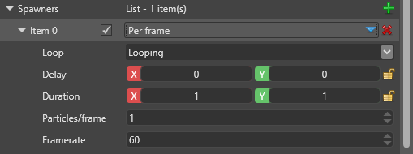
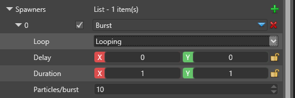
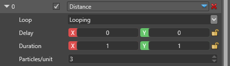

パーティクル スポナー
初級 アーティスト プログラマー
パーティクルスポナー（particle spawner） は、パーティクルをいつ、どれだけ、どんな早さで放出するかをコントロールします。エミッターには少なくとも 1 つのスポナーが必要ですが、異なる設定を持つ複数のスポナーを含めることもできます。
秒ごと（Per second）
1 秒間に決まった数のパーティクルを放出します。フレームレートが変化したり低下したりしてもバランスよく補間され、安定しています。例えば、1 秒間に 20 個のパーティクルを放出する場合、60 fps のゲームでは 3 フレームに 1 個、30 fps のゲームでは 3 フレームに 2 個のパーティクルを放出します（いずれも 3 つめのフレームではスキップされます）。

| プロパティ | 説明 |
|---|---|
| Loop | 放出をループさせるには、Looping を指定します（既定）。ループする際に待ち時間が発生ないようにするには、Looping, no delay を指定します。スポナーを一度だけ起動して停止させるには、One shot を指定します。 |
| Delay | 放出が始まるまでの待ち時間（秒）。X（最小値）とY（最大値）の間のランダムな値になります。 |
| Duration | 放出の持続時間（秒）。持続時間が終了すると、Loop プロパティに応じて、スポナーは再び開始するか停止します。 |
| Particles | 1 秒間に生成されるパーティクルの数です。浮動小数点数で指定できます（例：36.875）。 |
フレームごと（Per frame）
フレームごとに決まった数のパーティクルを放出します。フレームレートは関係ありません。これは、固定数のパーティクルが必要になる場合に便利です。例えば、1 フレームごとに正しく 1 個ずつパーティクルが生まれる設定は、軌跡やリボンなどで便利です。

| プロパティ | 説明 |
|---|---|
| Loop | 放出をループさせるには、Looping を指定します（既定）。ループする際に待ち時間が発生ないようにするには、Looping, no delay を指定します。スポナーを一度だけ起動して停止させるには、One shot を指定します。 |
| Delay | 放出が始まるまでの待ち時間（秒）。X（最小値）とY（最大値）の間のランダムな値になります。 |
| Duration | 放出の持続時間（秒）。持続時間が終了すると、Loop プロパティに応じて、スポナーは再び開始するか停止します。 |
| Particles | フレームごとに生成されるパーティクルの数です。値は浮動小数値であり、1 より小さい数も指定できます。その場合、パーティクルを数フレームごとに生成されます。 |
| Framerate | このフレームレートは、エンジンがパーティクルの最大個数を計算するためだけに使用する推定値です。 |
バースト（Burst）
すべてのパーティクルを一度の爆発で放出します。

| プロパティ | 説明 |
|---|---|
| Loop | 放出をループさせるには、Looping を指定します（既定）。ループする際に待ち時間が発生ないようにするには、Looping, no delay を指定します。スポナーを一度だけ起動して停止させるには、One shot を指定します。 |
| Delay | 放出が始まるまでの待ち時間（秒）。X（最小値）とY（最大値）の間のランダムな値になります。 |
| Duration | 放出の持続時間（秒）。持続時間が終了すると、Loop プロパティに応じて、スポナーは再び開始するか停止します。 |
| Particles/burst | 1 回のバーストごとに放出されるパーティクルの数。 |
Distance
エミッターの移動した距離に応じてパーティクルを放出します。エミッターが動かない場合はパーティクルを生成しません。

| プロパティ | 説明 |
|---|---|
| Loop | 放出をループさせるには、Looping を指定します（既定）。ループする際に待ち時間が発生ないようにするには、Looping, no delay を指定します。スポナーを一度だけ起動して停止させるには、One shot を指定します。 |
| Delay | 放出が始まるまでの待ち時間（秒）。X（最小値）とY（最大値）の間のランダムな値になります。 |
| Duration | 放出の持続時間（秒）。持続時間が終了すると、Loop プロパティに応じて、スポナーは再び開始するか停止します。 |
| Particles/unit | スポナーが距離単位を移動するごとに生成されるパーティクルの数です。距離単位あたりのパーティクル数が少ない場合には、分数を使用できます。レートはスケーリングで調整されます。 |
親から（From parent）
他のパーティクル（親）に基づいてパーティクルを放出します。親パーティクルの特定の条件が満たされた際に、スポナーはパーティクルを放出します。

| プロパティ | 説明 |
|---|---|
| Loop | 放出をループさせるには、Looping を指定します（既定）。ループする際に待ち時間が発生ないようにするには、Looping, no delay を指定します。スポナーを一度だけ起動して停止させるには、One shot を指定します。 |
| Delay | 放出が始まるまでの待ち時間（秒）。X（最小値）とY（最大値）の間のランダムな値になります。 |
| Duration | 放出の持続時間（秒）。持続時間が終了すると、Loop プロパティに応じて、スポナーは再び開始するか停止します。 |
| Parent emitter | 親となるエミッターの名前を指定します。 |
| Spawn Control Group | このフィールドは親パーティクルに追加され、どの親パーティクルが何個の子パーティクルを生成するかをより正確にコントロールできるようになります。4 つのグループから選ぶことができ、イニシャライザーの制御が必要な場合は、イニシャライザーのグループと一致させる必要があります。 |
| Particles/trigger | トリガー条件が満たされるたびに、親から生成されるパーティクルの最小個数と最大個数を指定します。 |
| Particle Spawn Trigger | どのような条件（トリガー）で子パーティクルが発生するのかを指定します（詳細は以下）。 |
パーティクル放出トリガー（Particle Spawn Trigger）
| トリガー | 説明 |
|---|---|
| On Birth | 子パーティクルは、親パーティクルが生まれたときに 1 度だけ生成されます（それぞれの親ごとに 1 回）。 |
| On Death | 子パーティクルは、親パーティクルが死んだときに 1 度だけ生成されます（それぞれの親ごとに 1 回）。 |
| Distance | 親パーティクルの移動距離に応じて子パーティクルが生成されます。 |
| On Hit | 親パーティクルは 衝突アップデーター（Collision Updater） を実装している必要があります。子パーティクルは、親パーティクルがサーフェスに衝突したときに生成されます。 |
| Lifetime | 親パーティクルのライフタイムを、全ライフタイムの長さを 1 として正規化して表した場合に、それが 2 つの値 A と B の間にあるときに子パーティクルが生成されます。A < B の場合、期間は 0...(A..B)...1 となり、B > A の場合、期間は逆に (0..B)...(A..1) となります。この方法は、On Birth/On Death よりも精度は低くなります。 |